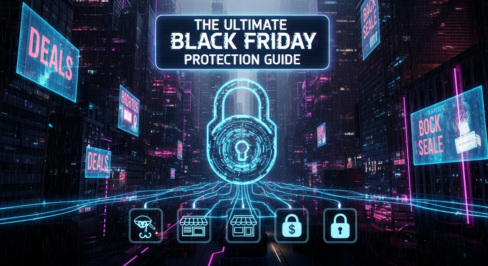

As the holiday season draws near, a palpable buzz fills the air, driven by the promise of incredible deals and the joy of gift-giving. Black Friday and Cyber Monday stand as the undisputed titans of this shopping frenzy, luring millions with deeply discounted merchandise and limited-time offers. However, beneath the glittering facade of these retail bonanzas lies a darker, more insidious reality: a breeding ground for sophisticated scammers eager to exploit the heightened consumer activity and the rush to secure bargains. These fraudsters meticulously craft their traps, preying on urgency, distraction, and the universal desire for a good deal. From elaborate phishing schemes designed to steal personal information to convincing fake websites mimicking legitimate retailers, the landscape of holiday shopping is riddled with potential pitfalls. Navigating this complex environment requires more than just a keen eye for discounts; it demands a comprehensive understanding of the threats that lurk, a proactive approach to digital security, and an unwavering commitment to vigilance. This ultimate Black Friday protection guide is meticulously designed to arm you with the knowledge, tools, and strategies necessary to safeguard your finances, protect your personal data, and ensure your holiday shopping experience remains joyous and secure, free from the shadow of scams.
The holiday shopping season, particularly around Black Friday and Cyber Monday, creates a perfect storm for cybercriminals and fraudsters. The sheer volume of transactions, the urgency driven by limited-time offers, and the general festive distraction provide ample cover for malicious activities. Understanding the intricate anatomy of these holiday scams is the first, crucial step in building an impenetrable defense. Scammers employ a diverse arsenal of tactics, constantly evolving their methods to bypass existing security measures and exploit human psychology. One of the most prevalent and insidious forms is the phishing scam, which often manifests as seemingly legitimate emails or text messages (smishing). These communications typically mimic trusted brands, such as major retailers, shipping carriers, or even banks, announcing irresistible deals, urgent shipping updates, or suspicious account activity. The goal is to trick recipients into clicking on malicious links that lead to fake login pages or download malware onto their devices, thereby compromising their credentials or personal data. These links might redirect to websites that look identical to genuine shopping portals, complete with logos and branding, but are, in fact, sophisticated traps designed to harvest everything from credit card numbers to social security details.
Beyond phishing, fake e-commerce websites proliferate during this period. These sites are often created with surprising levels of professionalism, using stolen branding and product images to appear authentic. They might offer products at prices that are suspiciously low, a classic "too good to be true" red flag. Shoppers, eager to snatch a bargain, might overlook subtle discrepancies in the URL (typosquatting, e.g., "Amaz0n" instead of "Amazon"), the absence of proper security certificates (HTTPS), or a lack of legitimate contact information. Upon purchase, consumers either receive counterfeit goods, nothing at all, or have their payment information stolen. Social media platforms also become hotbeds for scams, with fraudsters leveraging sponsored ads, fake giveaways, and imposter accounts to spread their nets. They might promote non-existent products, offer fake coupons that require personal data, or run "like and share" contests designed to collect user information or spread malware. Some even impersonate legitimate influencers or customer service representatives to directly engage with and deceive unsuspecting users. These social media scams often capitalize on the viral nature of platforms, spreading quickly through shares and tags before platforms can identify and remove them.
Gift card scams represent another significant threat, often involving the sale of compromised or fake gift cards. Scammers might tamper with cards on display in stores, stealing activation codes, or sell digital gift cards that are either invalid or quickly drained after purchase. A particularly insidious variation involves demanding payment for services or goods using gift cards, which is a near-certain indicator of fraud, as legitimate businesses rarely request payment in this non-traceable manner. Package delivery scams also spike, with fake notifications about missed deliveries or customs fees designed to prompt recipients to click on malicious links or provide personal information. These messages often create a sense of urgency, urging immediate action to avoid delays or additional charges, playing on the anxiety associated with receiving holiday packages. Finally, charity scams emerge during the season of giving, with fraudsters impersonating legitimate charitable organizations to solicit donations. They exploit the goodwill of individuals, diverting funds meant for noble causes into their own pockets. These scams often use names similar to well-known charities, create fake donation pages, or even engage in direct appeals through phishing emails or social media. Recognizing the intricate mechanics and diverse manifestations of these scams is fundamental to developing a robust defense strategy, transforming you from a potential victim into an informed and resilient shopper.
Before diving headfirst into the exhilarating world of Black Friday deals, a critical phase of pre-shopping preparation is absolutely essential to fortify your digital defenses. This proactive stance is not merely a recommendation; it is a fundamental requirement for safeguarding your personal information and financial assets against the relentless onslaught of holiday shopping scams. The digital landscape is a battlefield, and without proper armor and strategic positioning, you become an easy target. The cornerstone of this preparation involves a thorough overhaul of your password hygiene. Every online shopping account, email service, and financial portal you use must be secured with strong, unique passwords. Avoid using easily guessable information like birth dates, pet names, or sequential numbers. Instead, opt for complex combinations of uppercase and lowercase letters, numbers, and symbols, and ensure no two accounts share the same password. The logic is simple: if one account is compromised, a unique password prevents a domino effect across all your other digital properties. Complementing strong passwords, the activation of two-factor authentication (2FA) is a non-negotiable layer of security. Whether it's through a text message code, an authenticator app, or a physical security key, 2FA adds a critical barrier, requiring a second form of verification beyond your password, making it exponentially harder for unauthorized users to gain access even if they manage to steal your primary credentials.
Beyond individual account security, the overall health of your digital environment plays a pivotal role. Ensure all your operating systems (Windows, macOS, iOS, Android), web browsers (Chrome, Firefox, Edge, Safari), and any security software (antivirus, anti-malware) are fully updated to their latest versions. Software updates frequently include critical security patches that address newly discovered vulnerabilities, effectively closing doors that scammers might otherwise exploit. Running a comprehensive scan with reputable antivirus and anti-malware software before you even begin browsing for deals can detect and neutralize any existing threats that might be lurking on your devices, such as keyloggers or spyware designed to capture your information covertly. Furthermore, consider the network you use for shopping. Public Wi-Fi networks, while convenient, are inherently insecure and often unencrypted, making them prime targets for eavesdropping and data interception by malicious actors. Always use a Virtual Private Network (VPN) when connecting to public Wi-Fi to encrypt your internet traffic, creating a secure tunnel that shields your data from prying eyes. Ideally, conduct all sensitive transactions, including online shopping, from a secure, private network at home.
Another strategic preparation involves proactive financial monitoring. Before the shopping frenzy begins, check your credit reports from all three major bureaus (Experian, Equifax, TransUnion) to identify any anomalies or signs of identity theft that might have occurred prior to the holiday season. While you're at it, set up transaction alerts with your bank and credit card companies. These alerts notify you instantly via email or text message whenever a transaction occurs, allowing you to quickly identify and dispute any unauthorized purchases. For an added layer of privacy and control, consider creating a dedicated email address solely for online shopping and promotional newsletters. This segregates your primary email from potential spam and phishing attempts related to retail, making it easier to spot suspicious communications. Finally, take a moment to review the privacy settings on your social media accounts. Limit the personal information visible to the public, as scammers often scour these platforms for details they can use to craft convincing phishing attempts or answer security questions. By meticulously implementing these pre-shopping preparations, you establish a robust perimeter of defense, transforming your devices and accounts into fortresses against the myriad of holiday shopping scams, allowing you to shop with confidence and peace of mind.
Once your digital defenses are fortified, the next critical phase involves adopting secure shopping practices that allow you to navigate the bustling online marketplace safely and confidently. This isn't just about avoiding scams; it's about consciously making choices that prioritize your security throughout the entire purchasing process. The internet is a vast and intricate web, and while it offers unparalleled convenience, it also harbors numerous traps for the unwary. The very first rule of secure online shopping is to always verify the legitimacy of a website before entering any personal or payment information. This begins with checking the URL: ensure it starts with "HTTPS" (the 'S' stands for secure) and that a padlock icon is visible in your browser's address bar. This indicates that the connection between your browser and the website is encrypted, protecting your data during transmission. Furthermore, scrutinize the domain name for any subtle misspellings or extra characters (e.g., "amaz0n.com" instead of "amazon.com"). Typosquatting is a common tactic used by fraudsters to trick users into visiting fake sites. It's always safer to type the retailer's URL directly into your browser or use a trusted bookmark rather than clicking on links from unsolicited emails or social media ads, which are frequent vectors for phishing.
Beyond the technical indicators, conducting due diligence on sellers is paramount. If you're shopping from a retailer you're unfamiliar with, take a few moments to research them. Look for independent reviews on sites like Trustpilot or the Better Business Bureau (BBB). Check their official contact information; legitimate businesses will have easily accessible phone numbers, physical addresses, and responsive customer service. A lack of transparent contact details or overwhelmingly negative reviews should raise immediate red flags. When it comes to payment, always opt for credit cards over debit cards. Credit cards generally offer superior fraud protection, including the ability to dispute unauthorized charges and limited liability for fraudulent transactions. Many credit card companies also provide extended warranty protection or purchase protection, adding another layer of security. Alternatively, using secure payment platforms like PayPal, Apple Pay, or Google Pay can add an additional layer of insulation, as these services act as intermediaries, processing transactions without directly sharing your credit card details with the merchant. Never, under any circumstances, agree to pay via untraceable methods such as gift cards, wire transfers, or cryptocurrency if requested by a seller; these are almost always indicators of a scam.
Protect your identity and browse privately with Surfshark One - the all-in-one security suite.
GET 60% OFF SURFSHARK NOWDuring the holiday season, the allure of "too good to be true" deals is strong, but this phrase should always trigger your internal alarm bells. While genuine discounts abound, offers that seem ridiculously low compared to market value are often bait for scams, either leading to fake products, non-delivery, or identity theft. Exercise caution and common sense; if a deal feels suspicious, it probably is. Another critical practice involves avoiding online shopping on public Wi-Fi networks, even with a VPN. While a VPN encrypts your data, public networks still pose inherent risks. If you must shop on the go, use your mobile data plan, which typically offers a more secure connection. Throughout the shopping season, make it a habit to regularly monitor your bank and credit card statements for any suspicious or unauthorized transactions. Many banks offer real-time alerts for purchases, which can help you catch fraudulent activity immediately. Finally, always save copies of your receipts, order confirmations, and any correspondence with sellers. This documentation is invaluable if you need to dispute a charge, return an item, or report a scam. By integrating these secure shopping practices into your routine, you empower yourself to navigate the online marketplace with confidence, ensuring your holiday purchases are not only great deals but also genuinely secure transactions.
In the ongoing battle against holiday shopping scams, individual vigilance, while crucial, is significantly amplified by leveraging a suite of specialized tools and technological solutions. These digital aids act as your frontline defense, providing automated protection, enhancing security measures, and simplifying complex security practices. Integrating these essential tools into your online shopping routine is not merely an option but a strategic imperative for comprehensive scam prevention. At the forefront of this arsenal are password managers such as LastPass, 1Password, and Bitwarden. These indispensable tools generate and securely store strong, unique passwords for all your online accounts, eliminating the need for you to remember dozens of complex combinations. By facilitating the use of distinct, robust passwords for every shopping site, email service, and financial portal, password managers drastically reduce the risk of a single data breach compromising multiple accounts. They also often include features like secure notes for storing sensitive information and form autofill, which can help prevent phishing by only filling credentials on legitimate, recognized websites.
Equally vital are robust antivirus and anti-malware software solutions, including popular options like Norton, McAfee, Avast, and Malwarebytes. These programs provide real-time protection against a wide array of cyber threats, including viruses, spyware, ransomware, and phishing attempts. They scan incoming files, monitor website activity for malicious code, and detect suspicious behavior that could indicate a scam. Keeping these programs updated with the latest threat definitions ensures your devices are protected against newly emerging threats, forming a critical barrier against malware infections that could steal your personal and financial information. For those who frequently shop or browse on public Wi-Fi networks, a reliable Virtual Private Network (VPN) service like ExpressVPN, NordVPN, or CyberGhost is an absolute necessity. A VPN encrypts your internet connection, creating a secure tunnel for your data, thereby protecting your online activities from snoopers, hackers, and data interception attempts on unsecured networks. This is particularly crucial when accessing sensitive information or making purchases, as it shields your data from potential theft.
To further enhance your browsing security, various browser extensions offer specialized protection. Ad blockers like uBlock Origin can prevent malicious ads from loading, which are sometimes used to spread malware or redirect to scam sites. Privacy extensions such as Privacy Badger block trackers, while extensions designed for URL checking can warn you about suspicious links before you click them, helping to identify phishing attempts. These small but powerful additions to your browser provide an extra layer of defense against web-based threats. Monitoring your financial health is also paramount, and credit monitoring services offered by bureaus like Experian, Equifax, and TransUnion, or even through your bank, can be invaluable. These services alert you to significant changes in your credit report, such as new accounts opened in your name, which could be an early indicator of identity theft. Complementing this, two-factor authentication (2FA) apps like Google Authenticator or Authy provide an additional layer of security beyond passwords, generating time-sensitive codes required for login, making it significantly harder for unauthorized users to access your accounts even if they have your password. Finally, utilizing secure payment platforms such as PayPal, Apple Pay, and Google Pay acts as a buffer between your financial details and online merchants, adding a layer of anonymity and often providing their own dispute resolution services. By strategically deploying these essential tools and solutions, you transform your digital environment into a fortress, significantly reducing your vulnerability to holiday shopping scams and enabling a much safer online experience.
Even with the most robust digital defenses and diligent shopping practices, the cunning nature of holiday shopping scammers means that threats can still slip through. The final, critical layer of protection lies in your ability to recognize the subtle and not-so-subtle red flags that signal a scam, and to know how to respond effectively when confronted with a potential threat. Developing a keen eye for these warning signs is like having an internal alarm system, constantly scanning for anomalies in the digital landscape. One of the most common and immediate red flags appears in the form of poor grammar, spelling errors, or awkward phrasing in emails, text messages, or even on websites. Legitimate businesses invest heavily in professional communication; glaring mistakes are almost always a tell-tale sign of a fraudulent operation. Similarly, a sense of extreme urgency or high-pressure tactics is a classic scammer ploy. Phrases like "Act now or lose this deal forever!" or "Your account will be suspended if you don't respond immediately!" are designed to bypass rational thought and provoke impulsive action, preventing you from taking the time to verify the legitimacy of the communication.
Another significant red flag is any request for unusual payment methods. As previously mentioned, if a seller or service provider insists on payment via gift cards, wire transfers, cryptocurrency, or other non-traceable methods, it is an almost certain indicator of fraud. Legitimate businesses universally accept standard, traceable payment methods like credit cards or established digital payment platforms. Be highly suspicious of any request for excessive personal information that seems unrelated to the transaction at hand. While an online retailer needs your shipping address and payment details, they typically do not need your social security number, mother's maiden name, or other highly sensitive data for a standard purchase. Such requests are often attempts at identity theft. The "too good to be true" deal principle bears repeating here: while Black Friday offers significant discounts, a brand-new high-end smartphone for $50, for example, is simply unrealistic. Scammers use these impossible prices as bait, knowing that the lure of an incredible bargain can blind even the most cautious shopper to other warning signs. Always compare prices across multiple reputable retailers to gauge realistic market value.
A lack of verifiable contact information or consistently negative customer service reviews for an unfamiliar retailer should also raise serious concerns. Legitimate businesses provide clear channels for customer support, including phone numbers, email addresses, and often a physical address. If you can't find this information or if reviews repeatedly mention non-delivery, poor product quality, or unresponsive support, steer clear. Generic greetings in emails, such as "Dear Customer" instead of your name, often indicate a bulk phishing attempt rather than a personalized communication from a legitimate company. Trust your gut feeling: if something feels off, it probably is. If you encounter any of these red flags, the immediate response should be to stop, verify, and if necessary, report. Do not click on suspicious links, do not reply to questionable messages, and do not provide any information. Instead, independently verify the claim by going directly to the official website of the company or contacting them via their official customer service number (found through a separate search, not from the suspicious communication). If you suspect you have been scammed or have accidentally provided information, act immediately: contact your bank or credit card company to report fraudulent charges and potentially freeze your accounts, change all affected passwords, and report the incident to authorities like the Federal Trade Commission (FTC) or the Internet Crime Complaint Center (IC3). Your swift and informed response is paramount in limiting potential damage and preventing further victimization.
The exhilarating rush of holiday shopping, particularly during the high-stakes periods of Black Friday and Cyber Monday, presents an unparalleled opportunity for consumers to secure incredible deals and spread festive cheer. However, this same environment, characterized by urgency, high transaction volumes, and widespread digital engagement, simultaneously creates a fertile ground for... and implement these strategies to ensure long-term success.
In summary, staying ahead of these trends is the key to business longevity and security. By following this guide, you maximize your growth and ensure a stable digital future.
Don't wait for the headlines. Our Private Telegram Channel delivers real-time AI security updates and digital wealth strategies before they go viral. Stay protected. Stay ahead.
⚡ JOIN THE 1% NOW